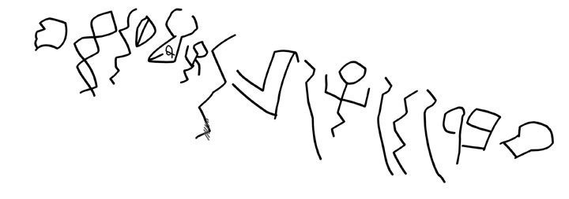
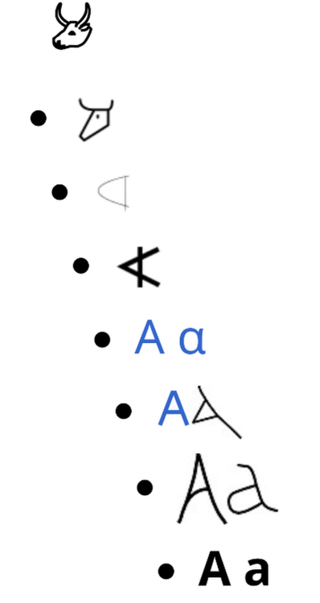

Speech came first.
History traced the ideas that made computation possible. This page traces the medium those ideas needed: language. Every language model is downstream of a biological accident: genomic evidence suggests the human capacity for language was present at least 135,000 years ago, and in widespread social use by 100,000 years ago.
The date comes from genetic and archaeological inference, not from a preserved organ of language; it is a range, not a timestamp. The human vocal tract can make a much wider range of sounds than those of other primates — the descended larynx and fine motor control are part of the story, though the exact biological package is still debated. That made spoken language possible, and spoken language made culture cumulative.
But speech is evanescent. Writing, from c. 3200 BCE in Mesopotamia, turned it into something that could survive the speaker, travel across distance, and be re-read. It did not begin as literature. It grew out of accounting: clay tokens for goods, then marks pressed into tablets, then signs for the sounds of names. Oral tradition already used rhythm and story as memory technology; writing made memory external and inspectable.
From grammar to information.
Grammar was studied long before machines. Pāṇini's Sanskrit grammar (Pāṇini, Aṣṭādhyāyī) described language as a system of rules around the 4th century BCE. It matters here because it is the first surviving attempt to describe a language as a finite set of rules that generates an unbounded set of sentences — the same ambition a formal grammar has. Printing in Europe around 1440, dictionaries, and standardised spelling made text abundant and comparable.
In 1948, Shannon separated the message from its meaning and measured information in bits (Shannon, 1948). A bit is one yes/no answer; a message carries as much information as the uncertainty it removes. That move made language computable. A model does not need to understand a sentence to predict the next token; it needs a representation and a lot of text. That is the deflationary reading, and it is worth stating plainly: whether prediction forces some internal model of the world is the contested part, not whether the training objective is prediction.
The last step is geometric: from word2vec (Mikolov et al., 2013) and subword tokenizers to modern embeddings, tokens become vectors, and meaning becomes a pattern of distances and directions. Word2vec's contribution was to make the old distributional intuition computable at scale: learn a vector by making it good at predicting a word's neighbours, or the neighbours from the word. The model inherits the whole stack — body, symbol, writing, information — and compresses it into weights.
From text to vectors.
Before a model can learn anything, text has to become a sequence of tokens. A tokenizer cuts the string into pieces from a fixed vocabulary: whole words, word fragments, punctuation, and bytes. The token ID is the only thing the model sees; the original characters are gone. That is why a model can be bad at spelling: it may never see the letters that make up a word, only the pieces the tokenizer chose.
Each token ID is looked up in an embedding table and becomes a vector. The table has one row per vocabulary item; a 100,000-token vocabulary with 4,000 dimensions is already 400 million numbers, before any transformer layer. The distributional idea is old: words that appear in similar contexts tend to have similar meanings (Firth, 1957), so their vectors end up close together. A direction in that space can carry a relationship, such as the direction from “man” to “woman” — but the famous analogy is an illustration, not a law. It works on some embeddings and some pairs, and fails on others.
That is the inheritance. Writing made text durable, Shannon made it measurable, and embeddings made it geometric. The model does not need a theory of language to learn the geometry; it needs enough text for the geometry to become useful. What it does need is a training signal, and that signal is prediction: the geometry is shaped by what makes the next token more likely, not by definitions.
Six layers of language technology · demo
Follow the long fuse from speech to tokens. Each step made text more durable, more comparable, or more computable.
One sentence, two worlds · demo
The syntax is fixed; the meaning is not. Click the highlighted phrase to switch readings. Context is the disambiguator.
The History of Writing
The evolution of writing is a multi-millennial journey of externalising human thought: from biological speech to physical marks, from marks to accounting, and from accounting to abstract script. Each step moved information further outside the brain.
Cave Paintings and Symbolic Art
The earliest forms of “proto-writing” began with symbolic art. These were the first instances of exogrammatic storage: information kept outside the human brain.
Some of the oldest known symbolic artefacts are ochre engravings from the Blombos Cave in South Africa, dating back to the Middle Stone Age. Objects like the Lebombo bone (c. 41,000 BCE) are even more specific: likely tally sticks for tracking lunar cycles or inventories.

.jpg){kind=link}
The Cueva de las Manos (Cave of the Hands) in Patagonia contains hundreds of hand stencils created between approximately 7,300 BC and 700 AD. Artists sprayed mineral pigments through hollow bone pipes over hands pressed against the rock face, producing negative imprints. The site also has naturalistic hunting scenes, geometric patterns, and abstract figures from several stylistic periods.
What makes these hand stencils significant in the trajectory toward artificial intelligence is not their aesthetic beauty but their cognitive implication: each handprint is an act of self-referential symbolic displacement. The artist uses their own body as a template to produce a persistent, external representation of themselves, a mark that says “I was here” long after the hand is withdrawn. This is the same cognitive operation that underlies all subsequent abstraction: the realisation that a sign can stand for a thing, and that the sign persists independently of the thing it represents.
Counting Stones and Tokens
In the Near East (c. 8000 BCE), the transition to agriculture required better accounting. People used small clay tokens of various shapes to represent goods such as grain or livestock. To secure a transaction, the tokens were often sealed inside clay envelopes called bullae. Eventually, accountants pressed the tokens into the outside of the bulla before sealing it, so the contents were visible from the exterior. The realisation that the mark of the object was as useful as the object itself is a critical missing link in the birth of writing.




Proto-Writing and the Rebus Principle
Around 3500 BCE, tokens were replaced by flat clay tablets with incised pictograms. At this stage, a symbol of an ox head simply meant “ox.” The Kish tablet (c. 3200–3000 BCE) from Sumer is among the earliest known proto-cuneiform tablets, bearing purely pictographic signs that have not been deciphered. The Vinča symbols (c. 4500–4000 BCE) of southeastern Europe are even older: a corpus of over a thousand inscribed artefacts whose function remains debated.
The Rebus Principle was the revolutionary shift. Symbols began to represent sounds rather than only objects: a picture of a bee and a leaf could be combined to “write” the word belief. That allowed scribes to record abstract concepts and proper names, and it turned writing from a picture of the world into a code for speech.
From Pictogram to Alphabet
Out of the Proto-Sinaitic experiments came the Phoenician alphabet (c. 1050 BCE), a compact set of 22 consonantal signs. The Greeks later added vowels, creating the first true alphabet. The letter A still carries the trace: aleph, an ox head, became alpha. That arc — from picture to abstraction, from resemblance to convention — is the same arc that leads from written characters to the token IDs and embeddings of a language model.

After the Flood: Information Is Not Meaning
That distinction is the cleanest way to state what a language model does and does not do. An LLM is a machine for estimating the probability of the next token from a vast corpus; it is exquisitely sensitive to the statistical structure of the flood, and it has no independent, non-statistical purchase on whether a sentence is true, important, or worth saying. Shannon deliberately excluded meaning from his theory, and the exclusion is still built into the objective: cross-entropy rewards a good guess about what comes next, not a good answer about what is the case.
This history therefore ends with a question rather than a triumph. Writing externalized memory; printing and the telegraph externalized and accelerated its transmission; Shannon made its quantity measurable; the computer made it machine-processable; and the LLM has now made a statistical model of the whole archive. What remains outside the model is the part the archive was always for: the act of a mind that means something by it. Whether that act can itself be captured by information, or whether it is the one thing the flood cannot carry, is the question the rest of this course takes up.
Language as a Window onto the World
If language is a system of abstract symbols, what does it symbolize? A tempting answer is that every tongue is simply a different set of labels for one shared inventory of things, a single universal list of concepts that each culture happens to pronounce differently. The evidence points somewhere stranger. Language is a window onto the world, and the window is cut differently in each culture. The world as a whole offers an almost inexhaustible number of aspects one could attend to; a language is a historically grown selection, a way of carving that continuum into named pieces, and its speakers learn to look through that particular frame.
When one language names something another does not, the difference is not merely a missing label. A word is a handle: it lets speakers pick out, hold steady, and pass around a particular aspect of experience. A language that has a word for a distinction hands its speakers a tool the other language’s speakers lack, just as a language can fuse into one word what another must laboriously spell out. To learn another language is not to relabel a single world but to acquire a second set of handles on it, and so to see a few more of the aspects it was always possible to see.
The Cognitive Ignition: From Indexical Signaling to Symbolic Displacement
The most profound leap in human evolution was the transition from indexical signaling to symbolic displacement. Early primate communication was largely tied to immediate stimuli, a specific call for a specific predator, right here, right now. True language emerged when our ancestors began using sounds to refer to things absent in time or space. This required a massive expansion in working memory and the cognitive ability to maintain “mental representations.”
The short version.
An LLM is the newest layer in a very old stack.
Body, symbol, writing, grammar, and information theory all had to exist before text could become training data.